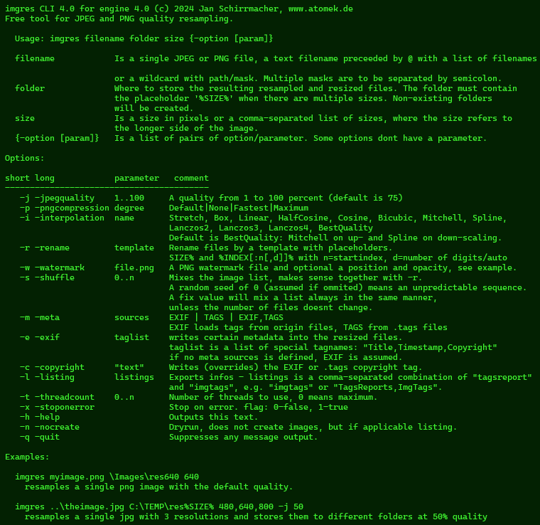

ImageResize - free tool for scaling of JPEG and PNG images
 Version 4.0 available - Windows 64 Bit
Version 4.0 available - Windows 64 Bit
- New Design
- EXIF Tagging
- Tags Report Export
- Interpolation Control
- Web Gallery Generator (Presentation)
Graphical User Interface

Commandline Interface
Contents
Download complete - Windows 64Bit, GUI and commandline interfaceDownload commandline only - Windows 64Bit
Sources available on GitHub: https://github.com/Atomek61/ImageResize.git
License
Overview
Windows GUI Application
Commandline Interface for Windows (CLI)
Version History
Copyright and License
ImageResize Copyright (c) 2024 Jan Schirrmacher, www.atomek.de
Permission is hereby granted, free of charge, to any person obtaining a copy of this software and associated documentation files (the "Software"), to deal in the Software without restriction, including without limitation the rights to use, copy and merge copies of the Software, subject to the following conditions:
The above copyright notice and this permission notice shall be included in all copies or substantial portions of the Software.
THE SOFTWARE IS PROVIDED "AS IS", WITHOUT WARRANTY OF ANY KIND, EXPRESS OR IMPLIED, INCLUDING BUT NOT LIMITED TO THE WARRANTIES OF MERCHANTABILITY, FITNESS FOR A PARTICULAR PURPOSE AND NONINFRINGEMENT. IN NO EVENT SHALL THE AUTHOR OR COPYRIGHT HOLDER BE LIABLE FOR ANY CLAIM, DAMAGES OR OTHER LIABILITY, WHETHER IN AN ACTION OF CONTRACT, TORT OR OTHERWISE, ARISING FROM, OUT OF OR IN CONNECTION WITH THE SOFTWARE OR THE USE OR OTHER DEALINGS IN THE SOFTWARE.
Overview
I wrote this little tool for my website, where I sometimes have to resample high resolution images to web images at a lower resolution.
Formerly I used JpgIlluminator or IrfanView for this purpose, which are excellent tools for their purposes. I decided to write a tool of my own, which fullfills my special needs:
- Resampling JPEG and PNG files with a good quality
- Bulk resizing of several files for several resolutions
- Adding a watermark
- Easy to use
- Easy maintenace of existing image galleries
- Commandline version and GUI version
- Quality/Size control - JPEG quality and PNG compression
- Multithreading for better bulk performance
- Many Resampling algorithm available - 3x Lanczos, Spline, Bicubic, ...
- EXIF Tagging of created images with Copyright, Title and Timestamp
- Tags Reporting for the comming Slideshow Afterburner
- Use with Microsoft Windows 10 or 11
- And the best: Web Gallery Generator (Presentation)
And NEW and the best (beside its free): A Web Gallery Generator

- The presentation is a complete website for your browser
- Its designed to be copied to your web-server
- You can choose different designs
- The Presentation Manager is designed to be customizeable, create new web presentations with HTML, CSS and JavaScript

Versions
ImageResize has three parts, each has its own version
| Part | Name | Meaning | Version |
|---|---|---|---|
| Library | TProcessor | Functional core | 4.0 |
| GUI | ImageResize.exe | Graphical User Interface | 4.0 |
| CLI | imgres.exe | Commandline Interface | 4.0 |
Windows GUI Application - ImageResize.exe
This application is compiled for Microsoft Windows 64 Bit, but the source could be ported for Linux or OSX.
Getting Help
After installing the GUI application you have either a local copy of the HTML-Help files (an installation option) or you can access the web documentation on my homepage.
To get help from inside the application, many controls have hints or simply press <F1> - depending on the context, the HTML topic will be displayed.
Complete reference (English)
Komplette Referenz (Deutsch)
Commandline Interface imgres.exe
Download the imgres.exe file, copy it to your Windows folder, open the commandline with cmd.exe and type imgres. This will display a help text.
Example to scale an image with source image, target folder and new size in pixel of the larger side:
C:\Pictures> imgres myphoto.jpg .\web1200 1200
imgres is written with Lazarus. The tool is available for Windows.
Version History
- V4.0 Presentation
- Web Presentation
- V3.5 New Design
- GUI face lifting
- More interpolation algorithms
- EXIF Tagging
- Tags Reporting
- Chuck Norris
- V3.4 Update Checking
- About dialog checks for updates
- GUI face lifting
- V3.3.3 - Minor GUI Improvements
- New Icons, better hints and captions
- V3.3 - Acceleration, Bugfixing
- Improved resampling parallelization when using multiple cores
- V3.2 - Bugfixing, Face-Lifting, Translation, Acceleration
- GUI - many small improvements
- Reduced Memory-Consumption
- Better execution speed when multithreading (see Boost)
- German localization
- V3.0 - Features and Improvements
- Feature Shaking - random image sequence
- Improvement Watermark - better size calculation
- V2.4 - Features
- Template-handling in Browsing for destination folder
- Icons for size-buttons
- V2.3 - Bugfixing, Features
- Bugfix errorhandling
- wildcards for CLI
- html help for CLI
- V2.2 - Help system
- Online help added
- Offline help added
- V2.1 - Small features and bugfixes
- Size Suggestion Buttons enhanced
- Some bugfixes
- V2.0 - Features
- Interactive watermark positioning
- .was files save watermark settings
- Watermark favorites saving
- V1.9.5 - Feature added
- Added a simple Watermark Editor
- V1.9.2 - Bugfix
- CLI Uninitialized vars
- may hang on -x with error loading a file
- V1.9.1 - Feature added
- StopOnError-Flag added
- V1.9 - Performance boost
- Introduced thread pooling
- V1.4 - GUI pimping
- Some symbols added
- PageControl introduced
- V1.3 - New features
- New commandline parameters for the GUI
- V1.2 - New features
- Opening and Saving
- Toolbar
- V1.1 - Bugfix
- in feature automatically adding %SIZE%
- V1.0 - Initial Release
Roadmap
- High DPI symbols in GUI
- Presentation Zipper
- Additional Web Presentations
- Command Line Interface for creating presentations